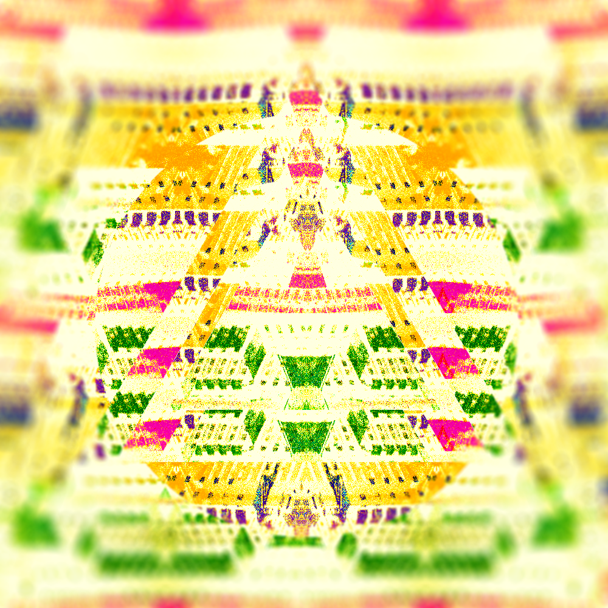
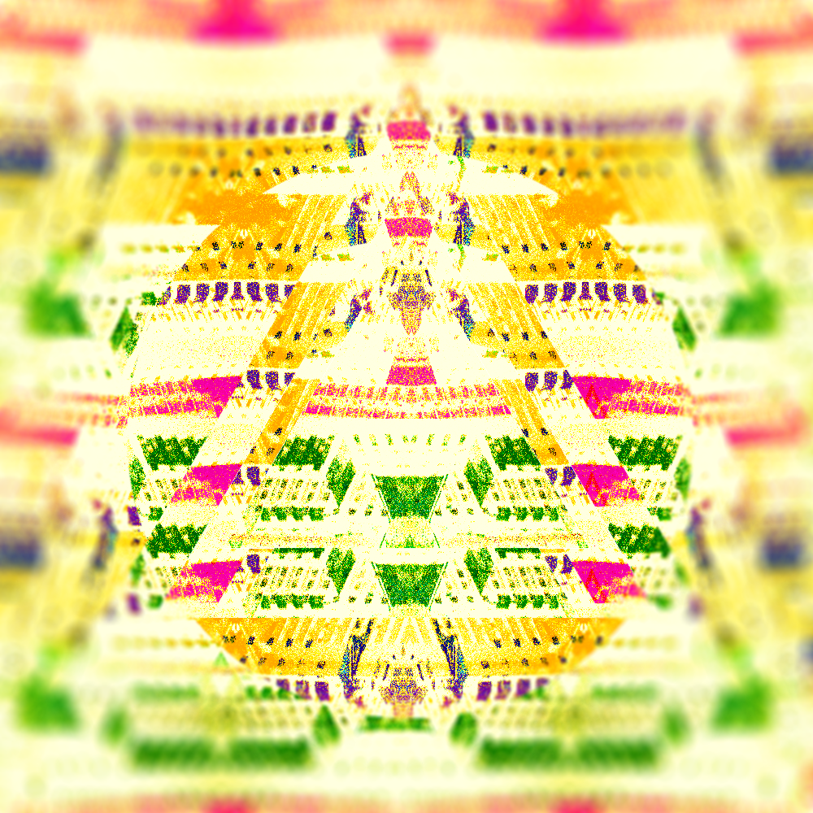

Pierre PORTEJOIE
Développeur Web/Mobile | Formateur It | Ingénieur
Développeur Web/Mobile | Formateur It | Ingénieur
Je suis ingénieur diplômé en informatique. J'ai la chance de pouvoir pratiquer mon métier en tant qu'indépendant. Je travaille actuellement en tant que développeur web. Je m'intéresse aussi à la recherche académique (réseaux de neurones, traitement d'images et génération procédurale) ainsi qu'au développement créatif orienté art numérique.
Nom:
Pierre PORTEJOIE
Age:
25 ans
Localisation:
Lyon, France
Ici sont regroupées toutes mes expériences professionnelles, académiques et associatives. Vous pouvez masquer mes travaux associatifs et stages mineurs, mes présentations et stages, mon parcours académique et professionnel.
2016 - Actuel
Professeur d'informatique
J'enseigne l'informatique orientée industrie, les réseaux et les télécommunications à des étudiants de BTS en deuxième année.
Le volume horaire est à raison de 150 heures par an. Cela me permet de changer régulièrement d'environnement et de garder l'esprit ouvert.
Lyon
|
www.ort-lyon.fr
2015 - Actuel
Développeur d'Applications et Sites Web - Consultant
Je développe des services web pour de multiples clients. Je prends en charge l'évaluation et la définition technique des projets, le choix des technologies,
la mise en place de l'environnement de travail en fonction de la taille de l'équipe, le développement concret des sites, la construction d'un niveau suffisant de sécurité et la mise en place d'un support fiable et efficace pour le client ainsi que ses utilisateurs.
Je peux aussi fournir un appui technique en tant que consultant lors d'audits ainsi qu'intervenir lors de missions de formation.
Lyon
|
pjoy.fr
Sept 2015
Présentation de mes travaux de recherche en Traitement d'Images
Mon travail à CREATIS (CNRS) a mené à un publication à la conférence annuelle IEEE ICIP. J'ai eu l'occasion de présenter mon travail à des experts du monde entier.
Ma contribution proposait une nouvelle formulation de la formule de diffusion anisotrope permettant le filtrage non linéaire d'images 3D voire 4D (possible mais non développé). Le côté applicatif de l'étude se focalisait sur le traitement de scans IRM de patients atteints de sclérose en plaques.
Ville de Québec
|
www.icip2015.org
2014 - 2015
Chercheur en Traitement d'Images
J'ai développé et implémenté une nouvelle méthode de filtrage et de débruitage de piles d'images 3D+t acquises par résonnance magnétique, basée sur la diffusion anisotrope.
Une deuxième mission m'a permis de prendre part à la conception d'une suite d'actions automatisées pour la segmentation (par atlas) de scans CT 3D basée sur le recalage d'images segmentées manuellement. Ce travail a été intégré au projet européen PIPER, rassemblant 10 partenaires dans 5 pays différents.
Villeurbanne
|
www.creatis.insa-lyon.fr
2013
Développeur Systèmes Embarqués
J'ai développé un programme permettant la diffusion de scénarios multimédia (séquences de sons, images et vidéos) et la détection des interactions utilisateur via capteurs analogiques/numériques sur Raspberry Pi.
L'idée était d'instancier plusieurs clients, chacun se chargeant d'un type de détection particulière ou de la projection d'un type de média particulier, connectés entre eux et synchronisés via un ordonnanceur interprétant un scénario .json.
Mon travail a été déployé dans l'installation Storystelling du musée Gallo-Romain de Lyon.
Saint-Clément les Places
|
www.erasme.org
2012
Chargé de Communication - Graphiste
J'ai créé des visuels abstraits pour un groupe de musique, associant une image à leur son.
J'ai aussi été en charge de la communication web et donc du choix des canaux et moyens à utiliser pour rester au plus proche de la philosophie de création du groupe.
Pau
|
www.adm-asso.fr
2010 & 2011
Technicien Lumière
J'ai participé, à deux reprises, à l'organisation d'un festival de théâtre et de musique en extérieur.
Il aura fallu préparer le terrain, monter les scènes, câbler et régler les projecteurs ainsi que le système sonore, concevoir une création lumière adaptée et enfin gérer la régie pendant les spectacles.
Festival Nuits de Rêve, Blanlhac
|
revedefoin.com
2009 - 2012
Secrétaire général - Technicien Son & Lumière
J'ai participé à l'organisation et l'administration d'une salle de théâtre d'environ 400 places accueillant jusqu'à 200 évènements par an.
J'ai aussi pris part à de nombreux montages et créations lumineuses et sonores.
Villeurbanne
|
rotonde.asso.insa-lyon.fr
2009
Travail Manuel
J'ai effectué la maintenance et la réparation de multiples engins dans le cadre du stage ouvrier de mon cursus ingénieur.
Nevers
|
www.sncf.com
2008 - 2014
Parcours d'ingénieur en Télécommunications, Services et Usages
Après deux années d'école préparatoire intégrée, je me suis dirigé vers ce diplôme étant naturellement attiré par l'informatique.
Les principales matières étudiées furent le développement logiciel, les réseaux et les télécoms.
Villeurbanne
|
www.insa-lyon.fr
2005 - 2008
Baccalauréat Scientifique
Diplôme obtenu avec mention européenne. Acceptation à l'INSA de Lyon sur dossier.
Montluçon
1991
.
Voici les technologies avec lesquelles j'ai l'habitude de travailler. J'essaye d'en changer à chaque projet, quitte à sacrifier l'efficacité en faveur de l'apprentissage.
Je travaille néanmoins régulièrement avec Wordpress et jQuery.
Langue maternelle
Courant
Intermédiaire
.
Vous pouvez écouter mes différents projets liés au son en cliquant les liens suivants : |1| |2| |3|
J'ai codé un moteur physique 2D en javascript + HTML5 Canvas pour une intégration web. Voir le projet.
Vous pouvez modifier le code directement ici. Démonstration d'un mini-jeu utilisant cette bibliothèque.
J'ai travaillé au développement d'un système de projection interactif pendant l'un de mes stages ingénieur.
Détails d'un poster grand format dont le graphisme a été réalisé à l'aide de l'outil script d'Adobe Photoshop.
N'hésitez-pas à me contacter si la technique vous intéresse, je serai ravi d'en expliquer les détails.

Télécharger le poster en format réel. (.png, Très gros fichier)
Détails d'un poster grand format réalisé à l'aide de l'édition de scripts d'Adobe Photoshop
Je serais heureux d'écrire sur ce sujet si quelqu'un manifeste son intérêt
Vous pouvez télécharger le fichier complet ici (237 MB.)
Résultat de test de paramètres aléatoires lors du développement de mon moteur 2D javascript.
Plus les boules sont volumineuses, plus elles sont lourdes. Les lignes sont tracées en fonction de la valeur instantanée de la vitesse, jetez-y donc un oeil !

L'un des premiers résultats obtenus lors d'une expérimentation visant à replacer de façon récursive les parties d'une image en fonction de leurs valeurs RVB.
Le .gif est issu de la combinaison de plusieurs résultats possibles.
Le résultat final, utilisant une autre image. (Il faut un peu de temps pour charger, le code n'étant pas optimisé...)
Expérimentation avec des fonctions récursives visant à la génération d'un arbre virtuel dans un navigateur web grâce à HTML5 Canvas.
Les parties sont liées entre elles grâce à l'implémentation de lois mécaniques simples.
Jetez-y un oeil ici. Vous pouvez aussi jouer avec le code javascript par là.
La première version de l'idée permet de générer de plus nombreuses combinaisons.
Image issue du résultat final d'un projet visant à replacer de façon itérative les parties d'une image en fonction de la moyenne des valeurs des pixels. (HTML5 Canvas + JS)
Le lien suivant mène résultat final, générant l'image en temps réel. (Il faut un peu de temps pour charger, le code n'est pas optimisé ! )
L'ancienne version de mon site web !
Mon premier projet en tant que freelance. Il s'agit d'une plateforme sociale ayant pout but de rassembler les acteurs de l'entrepreneuriat, dans un premier temps en région lyonnaise.
J'ai effectué lors de ma prestation :
J'ai aussi déployé des compétences en gestion de projet, référencement naturel, intégration de design, administration système
Résultat de l'entrée de paramètres aléatoires dans mon projet de décomposition d'image.
J'ai pris part à la conception d'une suite d'actions automatisées pour la segmentation (par atlas) de scans CT 3D basée sur le recalage d'images segmentées manuellement.
Ce travail a été intégré au projet européen PIPER, rassemblant 10 partenaires dans 5 pays différents.
Mon travail au laboratoire CREATIS a mené à une publication à la conférence internationale IEEE ICIP
Le papier proposait une nouvelle formulation pour la méthode de diffusion anisotrope, permettant le filtrage non linéaire et spatio-temporel de séquences d'images 3D et 4D.
L'application était le filtrage de scans IRM de cerveaux de patients atteints de sclérose en plaques.
Mission en tant qu'indépendant : le développement du site web d'une agence immobilière sur Lyon.
Ma prestation a constitué :
J'ai aussi déployé des compétences en SEO, UX, intégration de design graphique, administration système
Voici une liste exhaustive de mes projets en tant qu'ingénieur ou indépendant remontant jusqu'à 2009. Si vous êtes intéressés par mes prestations en tant que développeur web vous pouvez afficher uniquement les sites web. Vous pouvez aussi n'afficher que mes travaux de recherche ou mes expérimentations en développement créatif et arts numériques.


.


 
